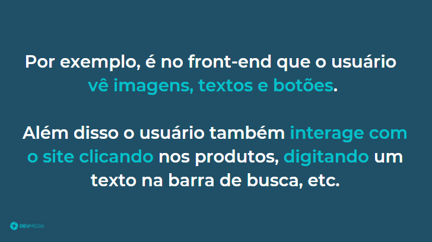
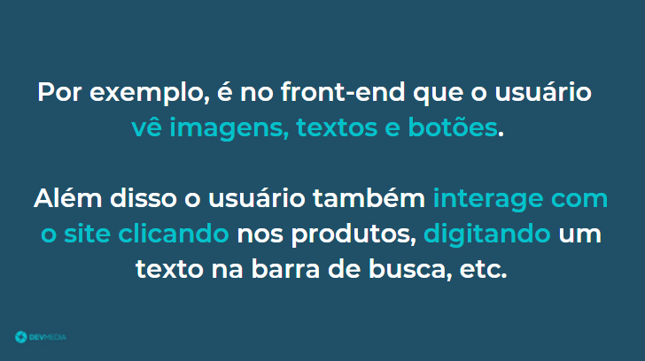


Além do front-end, alguns sites apresentam uma camada extra chamada de back-end como pode ser visto no flow abaixo:
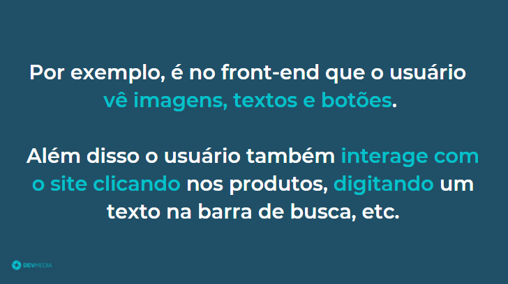
O usuário não tem acesso ao back-end
Entenda no flow abaixo o que é back-end:
 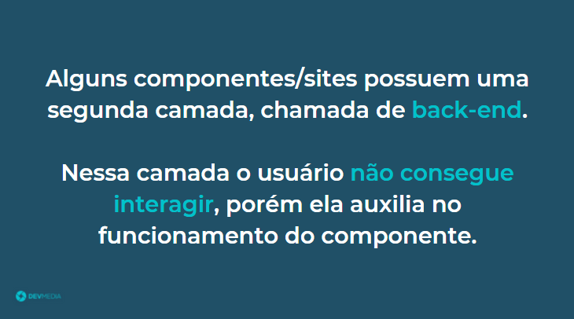
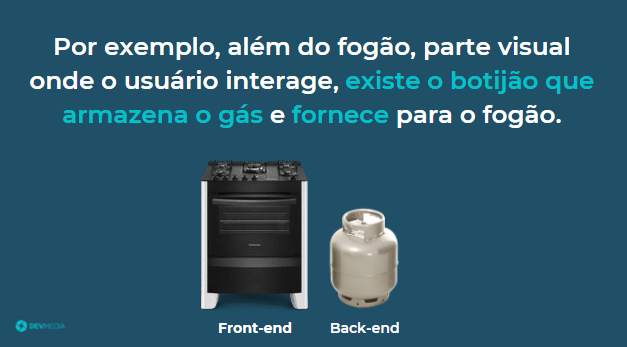
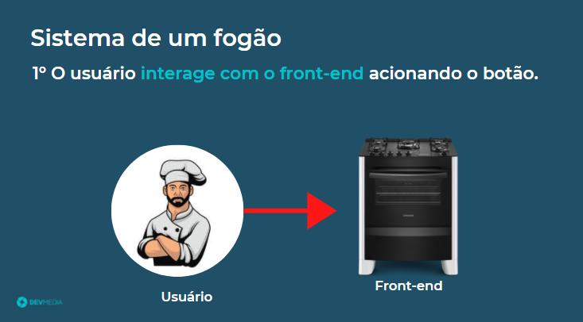
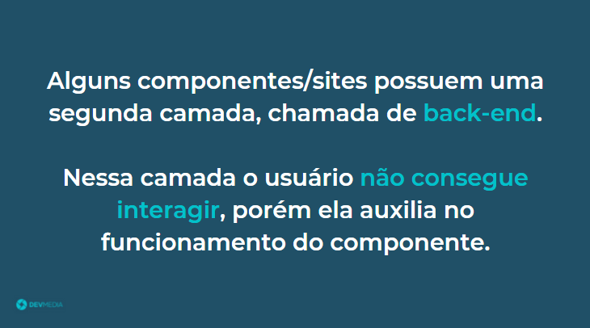
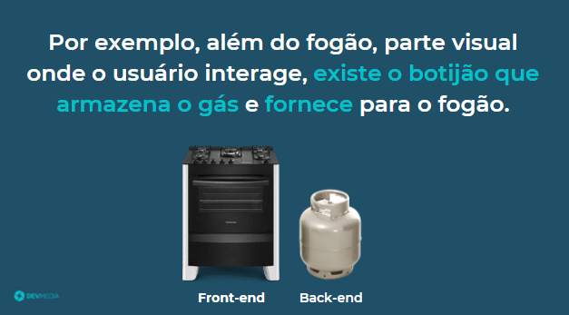
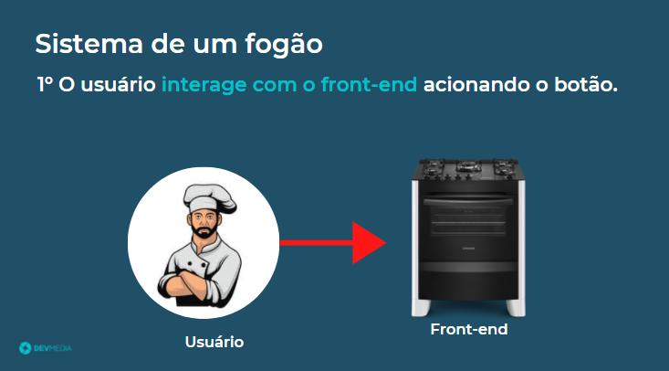

 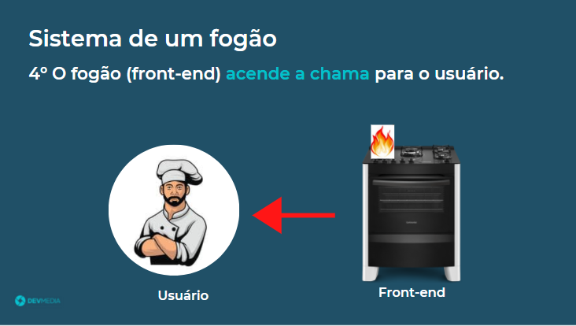
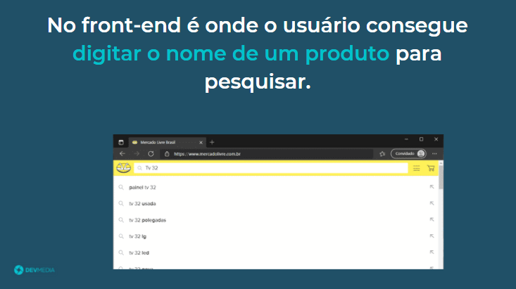
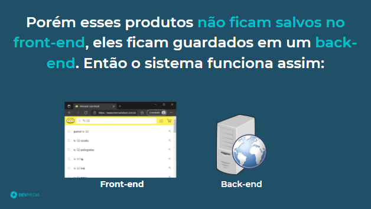
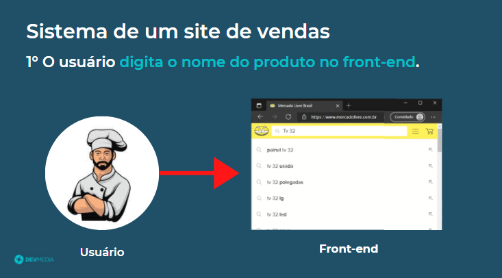
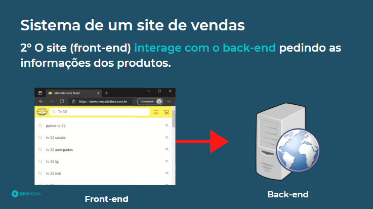
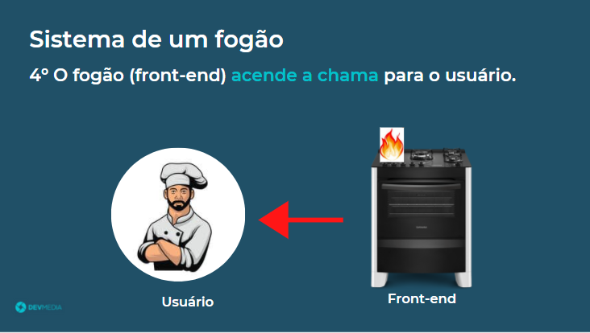
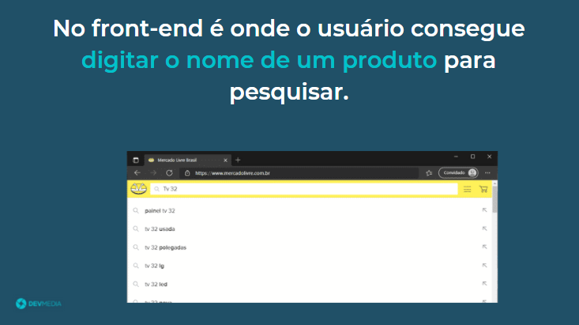
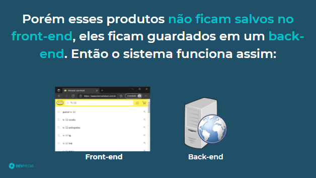
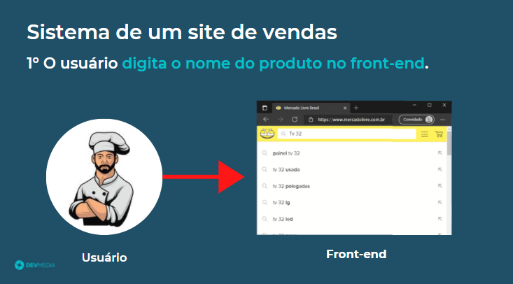
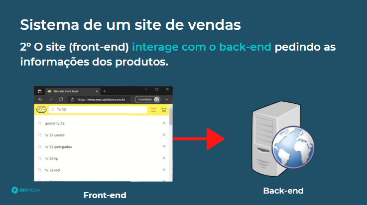

 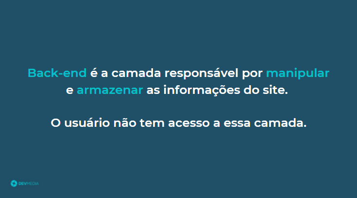
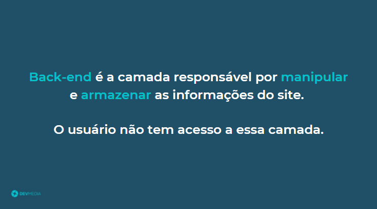
Back-end é a camada responsável por manipular e armazenar as informações do site
Veja na Figura 3 uma ilustração do front-end e back-end.
Back-end é a camada responsável por manipular e armazenar as informações do site. Nele o usuário não tem acesso, quem consegue interagir com o back-end é a camada front-end